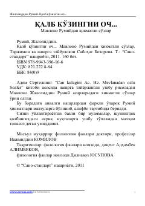

QKRumiyning hayot va ruh haqidagi teran hikmatli so'zlari to'plami.
Bu kitob buyuk mutafakkir Mavlono Jaloliddin Rumiyning asarlaridan tanlangan hikmatli so'zlar to'plamidir. Hikmatlar mavzularga bo'linib, alifbo tartibida berilgan bo'lib, Sabohat Bozorova tomonidan nashrga tayyorlangan. Kitob o'quvchini ma'naviy tafakkurga, o'z-o'zini anglashga va ruhiy poklanishga chorlaydigan nasihatlarni o'z ichiga oladi.